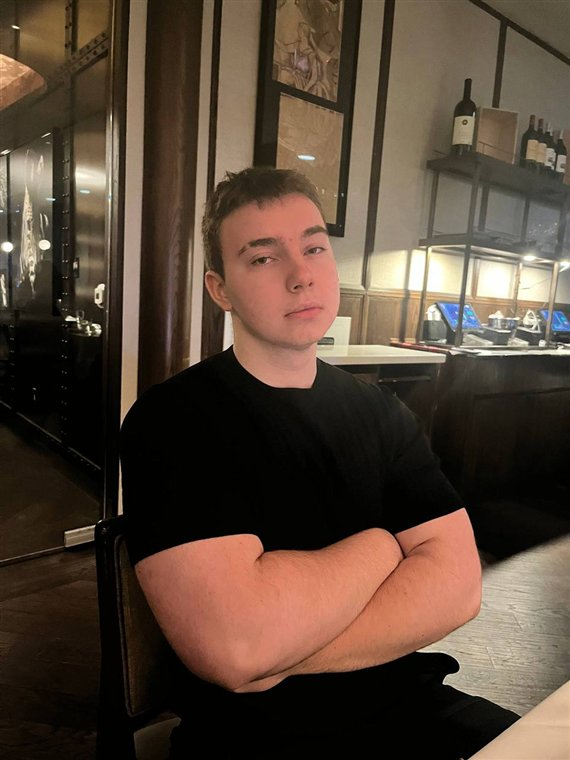

A — About Me
Who I am, and why this portfolio exists
## Biography
I am a Computer Science student at York University's Lassonde School of Engineering, focused on cybersecurity, cloud infrastructure, and automation. My interest began with a stubborn question — how do you actually prove a system is trustworthy? — and has since taken me through identity engineering, detection work, and malware analysis inside a live public-sector environment. Today I work as a Cybersecurity Intern, where most of my value comes from turning repetitive security work intoreliable, repeatable automation. I speak English, Russian and Ukrainian at full professional proficiency and work in Polish, Czech and German as well, which has made it normal to move between teams and conventions that do not share a vocabulary. I care about work that is precise, documented, and genuinely useful to the people who depend on it, and I would rather ship a small thing that holds up than a large thing that does not.
## Program of study
- Program
- B.Sc. (Honours) Computer Science
- Faculty
- Lassonde School of Engineering, York University
- Expected graduation
- 2028
- Standing
- Member of the Dean's Honour Roll
- Focus
- Cybersecurity · cloud infrastructure · automation
## Career goals
I want to become an engineer who can both build a system and defend it — someone who understands infrastructure deeply enough to automate it, and a threat model rigorously enough to anticipate how it fails. In the near term I am focused on turning my placement experience into specialist depth in identity, cloud, and detection engineering. In the longer term I want to apply that depth where the consequences are real: public and critical infrastructure that people depend on without ever thinking about it.
These goals are the organising framework for Section C, where each one gathers evidence in its own portfolio.
## Languages
Six languages, three at full professional proficiency. This is one of the few genuine strengths a résumé cannot convey: it means I can read primary documentation, follow a conversation, and work directly with people in several languages rather than through a translation.
| Language | Proficiency |
|---|---|
| Russian | Full professional |
| Ukrainian | Full professional |
| English | Full professional |
| Polish | Professional working |
| Czech | Intermediate |
| German | Intermediate |
Full professional and professional working follow the standard proficiency scale used on professional profiles; intermediate indicates conversational working ability.
## Interests
Outside coursework I build and break things in a home lab — segmented networks, detection pipelines, and the occasional machine-learning experiment. Most of it is public on GitHub. It began as a way to practise on infrastructure I was allowed to destroy, and it has become the main way I learn the things my courses do not cover.
The other half of that habit is more theoretical. I am working through low-level system design and cryptography deliberately, in the order the material depends on itself rather than the order it appears in a syllabus — at the moment that means authenticated encryption, working through ChaCha20-Poly1305 and ASPEC. None of it is finished, and I would rather record it as in progress than present a reading list as knowledge.
## Sport and training
The non-technical half, and the part a résumé has no place to put. I train six days a week for weightlifting and bodybuilding, and swim and wrestle alongside it. Six days a week is not something I fit around my schedule; it is the structure the rest of the week is built on. What it taught me is that progress on anything long-horizon comes from repeating an unglamorous routine on the days it is not enjoyable, which is the same thing that decides whether a portfolio gets maintained after the course ends.
Wrestling is the useful counterweight, because it is a sport where losing is immediate and legible. It is very hard to be vague with yourself about how well you prepared when the answer arrives in seconds. That is the habit I try to bring to technical work: prefer the test that can embarrass me now over the claim I cannot check.
## Photograph

Mykhailo Rud — Toronto, 2026
## Links
- codegithub.com/mchlrd — lab builds and independent projects, written up in Section E
- weblinkedin.com/in/mchlurd — professional profile and network
- mailrudmichael@outlook.com — professional contact
- nextSection B — Career — education, experience, and résumé